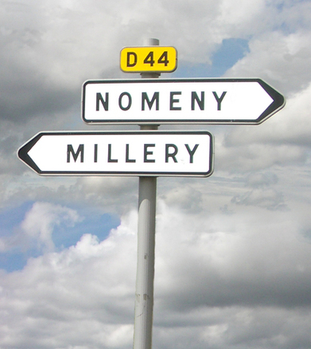

Adding the ismap or usemap attributes to the <img> tag means that the picture is an image with clickable areas. Imagine a picture of a world map where different countries on the map can be clicked and it navigates to another page like the country's wikipedia page. Simply put, we say such an image is mapped

- <map> defines a client-side image map, contains a set of area elements.
- <area> defines the areas that can be clicked and the pages it should navigate to. Typically takes the shape of the area, coordinates of the area, URL of the page it should redirect to and the alt attribute (short description).
- shape attribute in the has four values: circle, rect, poly default (whole image)
<img> bella cosa su come gestire i tag nel testo